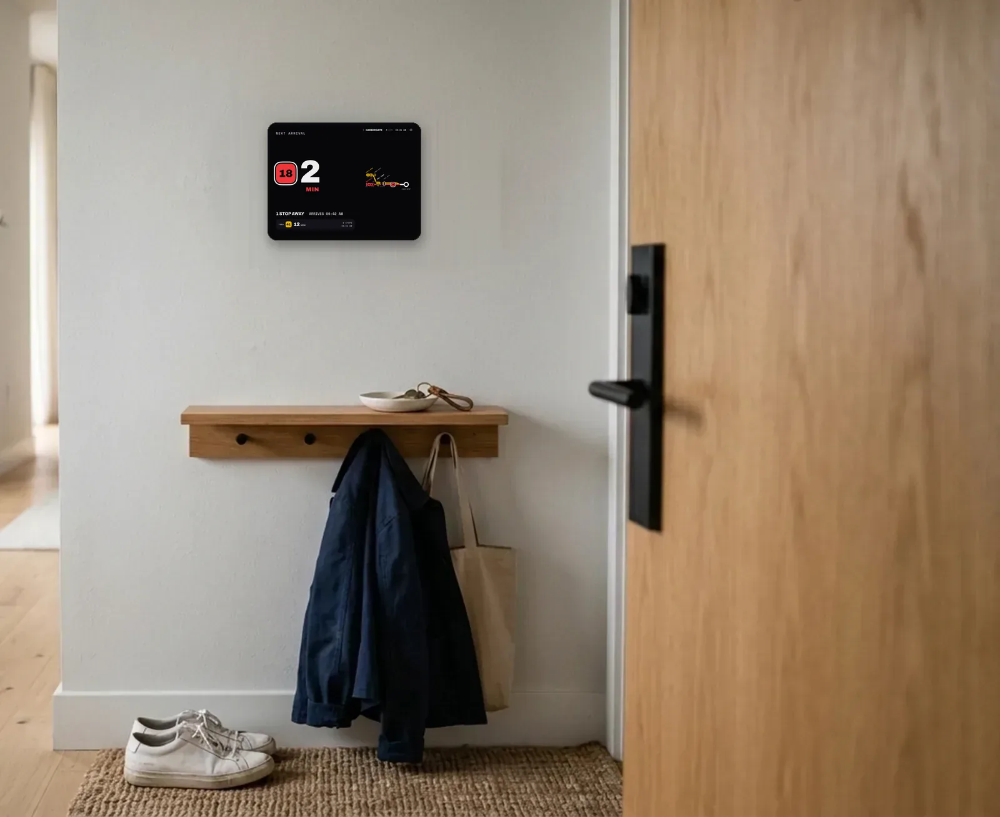
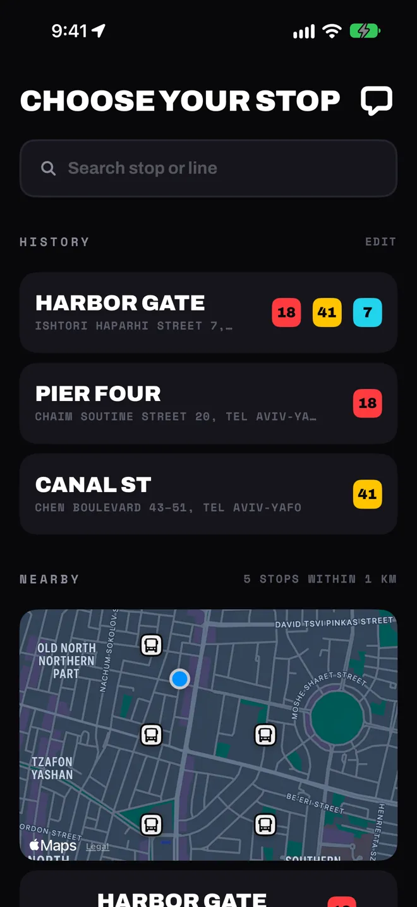
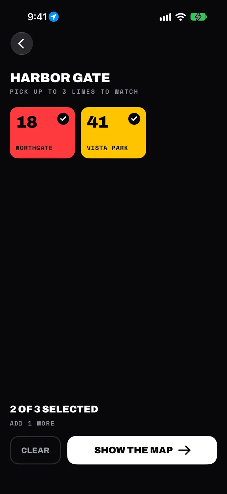
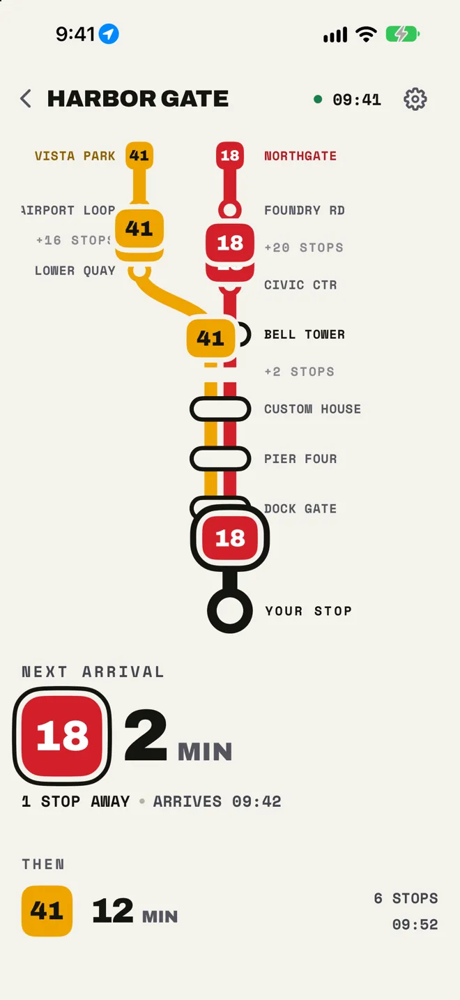
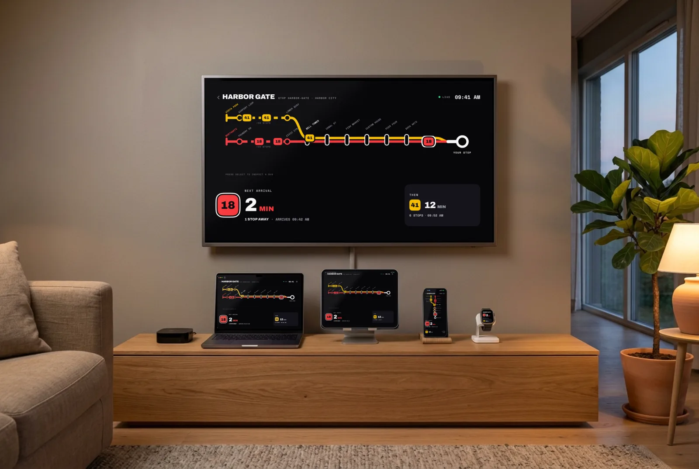

A board for your front door
Wall mode turns a spare iPad, iPhone or Mac into an always-on bus board for the hallway. The next bus fills half the screen, big enough to read from across the hall. Glance at it with your shoes on, and leave when the bus does.

Stays awake, stays dark
The board keeps the screen on and dims at night, so it doesn't light up the room.
On when you need it
Choose the days and hours, like weekday mornings only.
Kind to the screen
It shifts by a few pixels every few minutes to protect the display.
Recovers on its own
After a dropped connection it keeps the last board, checks again, and comes back without a touch.
Set it up once
No account and nothing to configure. The app finds your region from your location.
-

1Choose your stop
Stops nearby come first. You can also search by name, stop code, street or line, or move the map and search that area.
-

2Pick up to three lines
Each line gets its own route on the board, so the one you're waiting for is never lost in a list.
-

3Watch the buses come in
The next bus, how many stops it still has to go, and the one after it. Tap any bus on the route to see when it reaches you.
Home, work and school stay in your history, one tap apart. Pin the ones you use most.
On every screen in the house
iPhone, iPad, Mac, Apple Watch and Apple TV. Save a stop once and it's on all of them: your stops sync through iCloud, and Apple Watch follows your iPhone.

Where it runs
Arrival times come straight from the open data each transit agency publishes. Where an agency shares bus positions too, you see the buses move along the route.
Middle East
- Israel, nationwide
- Istanbul
Europe
- Norway
- Switzerland
- London
- Vienna
- Linz
- Rennes
- Lisbon area
- Turku
- Tampere
- Tallinn
- Vilnius
- Kaunas
- Poznań
- Gdańsk
- Kraków
- Brussels
- Nuremberg
- Ljubljana
- Bizkaia
North America
- New York City
- Boston
- Seattle & Puget Sound
- Minneapolis–St Paul
- Toronto
Asia & Oceania
- Hong Kong
- Tokyo
- Adelaide
Not on the map yet? Send feedback from the app and tell us where you ride.
Nothing to sign up for
No account
Your stops and settings are kept on your devices and in your own iCloud.
Location only while open
Used to pick your region and find stops near you, and never stored. You can always search instead.
No tracking
Crash reports and usage statistics help find bugs. They aren't tied to your name or used for ads.
Read the privacy policy for exactly what is sent, and to whom.
Questions
What's the difference between LIVE and SCHEDULED?
LIVE means the time comes from the bus's real position and the agency's live predictions. SCHEDULED means there's no live data for that bus yet, so the board shows the timetable. If the feed goes quiet, the board marks its numbers as stale and tells you when the last data arrived.
Why don't I see buses moving on the map?
Some agencies publish arrival times but not bus positions, so the board shows the minutes without buses on the route. Elsewhere it can mean no bus is on its way right now, or the next one hasn't started sending its position.
Is this an official app of the bus operator?
No. My Bus Stop is an independent app. It isn't made or endorsed by any transit agency or operator; it displays the public data they publish, and credits the source at the bottom of Settings.
Can I use it in my language?
The app follows your device's language, and you can pick another one for this app alone, including right-to-left layouts for Hebrew and Arabic. Widgets, Apple Watch and Apple TV follow your choice.
Is there a light theme?
Yes: System, Light and Dark. In wall mode the board always stays dark.
What happens when an agency's feed breaks?
Rather than show you wrong times, live data for that region is paused until the feed is healthy again. The board comes back by itself.